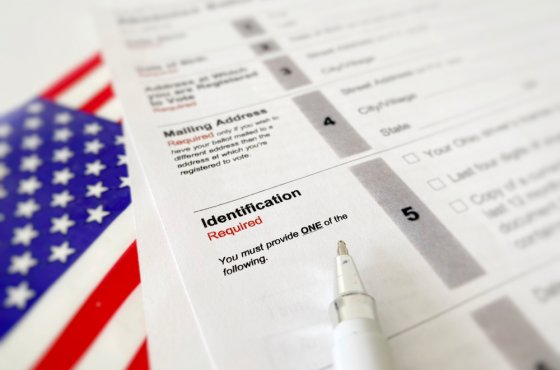
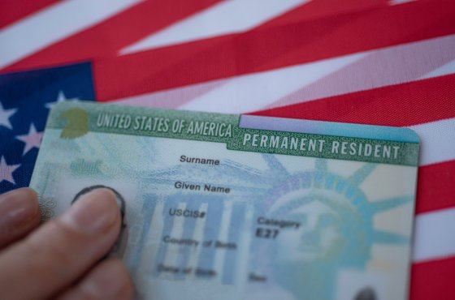

Fox News: ‘нулевой пациент’ с COVID-19 заразился в лаборатории вирусологии Уханя
Источники Fox News утверждают, что первый зараженный подхватил вирус 2019-nCoV совсем не на мясном рынке в Ухане, как заявляют власти Китая.

У журналистов новостного издания Fox News появилась информация, что распространение смертоносного вируса 2019-nCoV произошло из вирусной лаборатории в Ухане.Согласно словам нескольких источников издания, вирус не был специально созданным биологическим оружием, но являлся желанием КНР доказать Штатам, что ее успехи в изучении и борьбе с заражением превосходят результаты США.Источники сообщают, что видели данную информацию в засекреченных файлах.
'Это может стать самым большим в истории сокрытием важной информации на уровне правительства', – заявил один из источников издания.
По его данным, 'нулевой пациент' заразился вирусом от летучей мыши именно в лаборатории Уханя и разнес его, выйдя на улицы города.При этом в секретных документах указано, что вирус имеет естественное происхождение, и в уханьской лаборатории его изучали, а не создавали.Эксперты всего мира убеждены – Китай тщательно скрывает реальные данные о начале распространения вируса.
На просьбу прокомментировать эту информацию президент США Дональд Трамп ответил следующее: «Мы все чаще и чаще слышим эту историю… Мы тщательно изучаем сложившуюся ужасную ситуацию».
По теме: ‘Многочисленные случаи’: врачи назвали еще один неочевидный симптом коронавируса
Изначально в КНР заявляли, что вирус начал распространяться с рынка в Ухане, где продают мясо диких животных.Однако источники издания убеждены, что этой информацией Китай пытался отвлечь внимание общественности от разработок лаборатории.Более того, согласно данным секретных документов, на этом рынке никогда не продавали летучих мышей.Документы также подробно описывают ранние усилия врачей в лаборатории по сдерживанию распространения вируса, которые, как мы видим сейчас, не увенчались успехом.
Еще в январе 2018 года сотрудники посольства США в Китае заявляли о том, что в лаборатории Уханьского института вирусологии проводятся опасные исследования коронавируса и опыты на летучих мышах, сообщает Washington Post.
'Они вводили нас в заблуждение, они были нечестны, если хотите, с первых дней выявления вируса.Поэтому я не очень верю, что они честны с нами сейчас', – отметил глава Пентагона Марк Эспер, добавив, что разведка США практически полностью уверена в естественном происхождении вируса.
По его словам, если бы китайское правительство было более откровенным ранее, это помогло бы 'опередить' вирус, понять его структуру и быстрее разработать лечение и вакцину.
Знакомые с секретным отчетом источники издания также отметили, что структура вируса и картирование генома определенно показывают, что он не был генетически изменен, и имеет естественное происхождение.
Госсекретарь США Майк Помпео обвинил Китай в том, что он с опозданием уведомил мировое сообщество об эпидемии коронавируса, чем поставил весь мир под угрозу.
'Мы сожалеем, что об эпидемии, которая началась в Ухане, Китай не сообщили оперативно.Китайское правительство, Коммунистическая партия Китая не предоставили эту информацию своевременно.Это очень прискорбно… Это создает реальную угрозу всему миру', – сказал Майк Помпео.
'Сейчас мы точно знаем, что вирус возник в китайском Ухане.Мы знаем, что всего в нескольких милях от рынка расположен Уханьский институт вирусологии.Еще предстоит многое узнать, и власти США усердно работают над тем, чтобы все выяснить.Нам нужно, чтобы КНР раскрыла информацию', – добавил госсекретарь.
При этом отказался подтвердить или опровергнуть информацию американских СМИ о том, что вирус мог 'сбежать' из лаборатории в Ухане.
'Эта лаборатория изучала сильные вирусные материалы.Мы знали об этом, знали о том, что они работают над такой программой, у многих стран есть такие программы', – сказал Помпео, уйдя от прямого ответа.
По теме: ‘Распространяла дезинформацию о COVID-19’: Трамп приостановил финансирование ВОЗ
16 апреля Министерство иностранных дел Китая отвергло подозрения в том, что вирус 'сбежал' из лаборатории, сославшись на заявления Всемирной организации здравоохранения о том, что нет никаких доказательств искусственного создания коронавируса.
Изначально американцы готовили китайских вирусологов по программе PREVENT, но это было задолго до того, как в КНР начали работать над этим вирусом.Французское правительство проспонсировало и помогло китайцам создать лабораторию в Ухане, разработки которой сейчас стали интересны всему миру.
Китай «на 100 процентов» скрыл и изменил данные, сообщают источники Fox News.Образцы были уничтожены, загрязненные участки вычищены, некоторые ранние сообщения были стерты, академические статьи уничтожены.
Врачи и журналисты, которые предупреждали о распространении вируса, его заразности и риске передачи от человека человеку, по словам источников, 'исчезли'.Кроме того, сообщают они, Всемирная организация здравоохранения (ВОЗ) с самого начала была причастна к сокрытию информации о нарастающей пандемии.
14 апреля на брифинге по коронавирусу в Белом доме Трамп заявил, что Соединенные Штаты немедленно прекращают финансирование ВОЗ, поскольку она поставила «политкорректность выше спасения жизней».Соединенные Штаты являются крупнейшим спонсором ВОЗ.Ранее Государственный департамент планировал предоставить агентству 893 млн долларов в течение текущего двухлетнего периода финансирования.
Через шесть дней после того, как высокопоставленные китайские чиновники осознали, что они, вероятно, столкнулись с пандемией из-за нового коронавирусного заболевания, в городе Ухань в эпицентре болезни был устроен массовый банкет для десятков тысяч людей, а миллионы китайцев поехали к родственникам на празднование лунного Нового года.
По теме: Китай почти неделю скрывал от мира информацию о начале эпидемии COVID-19
Президент Си Цзиньпин уведомил общественность о ситуации только на седьмой день после начала эпидемии, 20 января.Но к тому времени уже более 3000 человек в Китае были заражены и начали развозить вирус по миру.
«Это шокирует, – сказал Цзо-Фенг Чжан, эпидемиолог из Калифорнийского университета в Лос-Анджелесе.– Если бы они приняли меры на шесть дней раньше, пациентов было бы намного меньше, и мест в медицинских учреждениях хватило бы всем.Мы могли бы избежать краха медицинской системы Уханя».
Как ранее писал ForumDaily:
Стремясь держать своих читателей в курсе последних новостей по ситуации с коронавирусом, ForumDaily собрал самые последние данные по заражениям и смертям в одном тексте, который мы регулярно обновляем.
Читайте также на ForumDaily:
Когда самое трудное позади: украинец в Китае рассказал о жизни на карантине и после него
‘Казалось, у меня кусок мяса, а не горло’: пять историй людей, вылечившихся от COVID-19
Хотите больше важных и интересных новостей о жизни в США и иммиграции в Америку?Подписывайтесь на нашу страницу в Facebook.Выбирайте опцию 'Приоритет в показе' – и читайте нас первыми.Кроме того, не забудьте оформить подписку на наш канал в Telegram – там много интересного.И присоединяйтесь к тысячам читателей ForumDaily Woman и ForumDaily New York – там вас ждет масса интересной и позитивной информации.
Posted On: 2020-04-17T12:39:00

Content Date: 2020-04-17
Download Date: 2021-05-13
Document ID: L0C04C28T